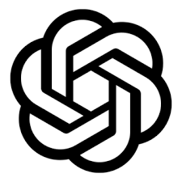
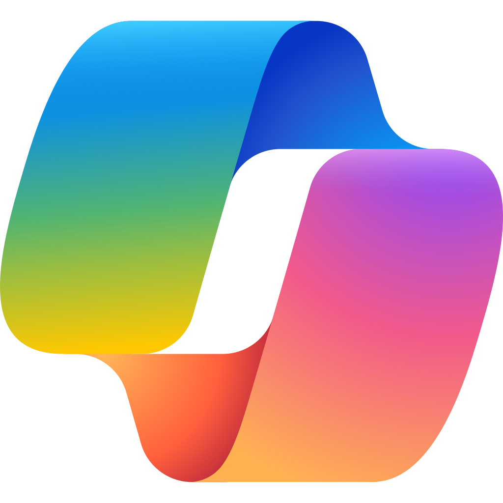
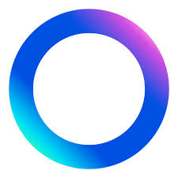
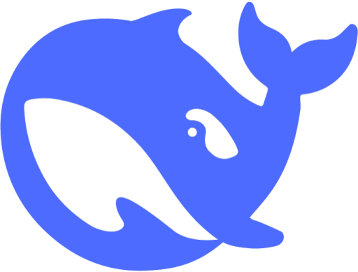
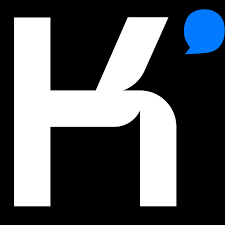
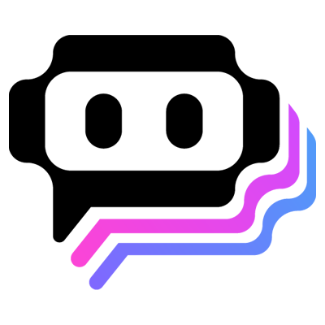

ChatGPT
Modelo de linguagem avançado da OpenAI capaz de gerar textos, códigos e muito mais.
Visitar siteExplore 13 registros da categoria Chatbot do The AI Stackies. Compare assistentes para conversar, pesquisar informações, elaborar textos e apoiar tarefas de trabalho ou estudo.
Defina primeiro seu objetivo: tirar dúvidas, escrever, estudar, buscar fontes ou executar tarefas mais complexas. Observe qualidade das respostas, transparência das fontes, privacidade e limites de uso. Os registros incluem tanto assistentes quanto empresas e serviços relacionados; consulte o fornecedor para conferir os recursos atuais.

Modelo de linguagem avançado da OpenAI capaz de gerar textos, códigos e muito mais.
Visitar siteIA da Anthropic, famosa por ser segura e processar livros inteiros.
Visitar siteUm mecanismo de busca conversacional que cita as fontes.
Visitar siteA IA mais avançada do Google, integrada ao ecossistema Workspace.
Visitar site
Integrado ao Bing e Windows, usa GPT-4 gratuitamente.
Visitar siteConverse com personalidades simuladas e personagens.
Visitar siteA IA do X (Twitter), com acesso a dados em tempo real e humor ácido.
Visitar site
AI generativa integrada aos aplicativos da Meta (WhatsApp, Instagram e Facebook).
Visitar site
Chatbot que gera textos, responde perguntas, auxiliar em programação, tradução e análise de dados.
Visitar siteA Anthropic é uma empresa de interesse público dedicada a garantir seus benefícios e mitigar seus riscos.
Visitar site
AI Conversacional avançada, focada em processamento de textos longos.
Visitar site
Agregador e assistente de chatbots de Inteligência Artificial (IA)
Visitar siteAI autónomo projetado para executar tarefas complexas de ponta a ponta
Visitar siteAs descrições e links foram reproduzidos dos registros atuais de data.js, sem testes individuais nem revalidação de versões ou preços. Alguns nomes representam empresas ou agentes, além de chatbots tradicionais.
Considere precisão, fontes citadas, proteção de dados, disponibilidade em português, recursos de integração e limites de uso. Confirme políticas, preços e capacidades atuais nos sites dos fornecedores antes de depender da ferramenta em decisões importantes.